Ph.D. at Xiamen University
|
|
[Biography] [Latest News] [Publications] [Professional Activities] [Major Awards] [Statistics]
Biography [back top]
I will be a researcher at Tencent Youtu Lab, where I work on computer vision and information retrieval. I will finish the M.S.-Ph.D. study and obtain my Ph.D. degree from Xiamen University in 2022, advised by Prof. Rongrong Ji. Earlier, I received the B.S. degree from Fuzhou University in 2016, supervised by Prof. Dong Zhang.
My recent research interests are to develop efficient vision models, as well as image/text retrieval.
- Coming: Researcher, Tencent Youtu Lab, Shanghai, China
- 09/2019 -- 06/2022: Research Intern, Peng Cheng Lab, Shenzhen, China
- 09/2018 -- 06/2022: Ph.D. in Intelligence Science and Technology, Xiamen University, Xiamen, China
- 09/2016 -- 06/2018: M.S. in Computer Technology, Xiamen University, Xiamen, China
- 09/2012 -- 06/2016: B.S. in Computer Science and Technology, Fuzhou University, Fuzhou, China
Latest News [back top]
- 05/2022: One paper accepted by IEEE TPAMI
- 03/2022: One paper accepted by CVPR 2022
- 03/2022: One paper accepted by IEEE TMM
- 02/2022 -- 03/2022: Three papers accepted by IEEE TNNLS
Publications [back top]
Journal
| 010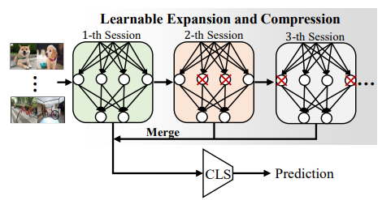 | Boyu Yang, Mingbao Lin, Yunxiao Zhang, Binghao Liu, Xiaodan Liang, Rongrong Ji, Qixiang Ye✉
Dynamic Support Network for Few-shot Class Incremental Learning IEEE Transactions on Pattern Analysis and Machine Intelligence (TPAMI), 2022 [pdf] [arXiv] [code] |
| 009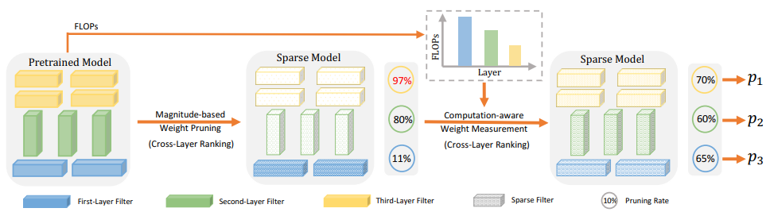 | Mingbao Lin, Liujuan Cao✉, Yuxin Zhang, Ling Shao, Chia-Wen Lin, Rongrong Ji
Pruning Networks with Cross-Layer Ranking & k-Reciprocal Nearest Filters IEEE Transactions on Neural Networks and Learning Systems (TNNLS), 2022 [pdf] [arXiv] [code] |
| 008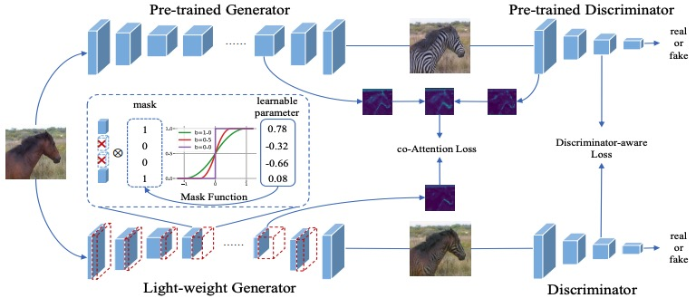 | Shaojie Li, Mingbao Lin, Yan Wang, Fei Chao, Ling Shao, Rongrong Ji✉
Learning Efficient GANs for Image Translation via Differentiable Masks and co-Attention Distillation IEEE Transactions on Multimedia (TMM), 2022 [pdf] [arXiv] [code] |
007 |
Shaojie Li, Mingbao Lin, Yan Wang, Yongjian Wu, Yonghong Tian, Ling Shao, Rongrong Ji✉
Distilling a Powerful Student Model via Online Knowledge Distillation IEEE Transactions on Neural Networks and Learning Systems (TNNLS), 2022 [pdf] [arXiv] [code] |
006 |
Yuxin Zhang, Mingbao Lin, Chia-Wen Lin, Jie Chen, Yongjian Wu, Yonghong Tian, Rongrong Ji✉
Carrying out CNN Channel Pruning in a White Box IEEE Transactions on Neural Networks and Learning Systems (TNNLS), 2022 [pdf] [arXiv] [code] |
| 005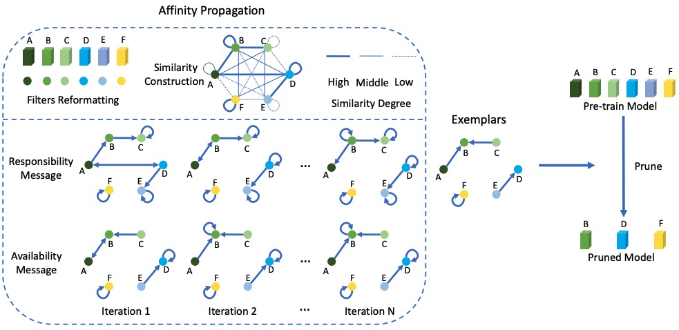 | Mingbao Lin, Rongrong Ji✉, Shaojie Li, Yan Wang, Yongjian Wu, Feiyue Huang, Qixiang Ye
Network Pruning using Adaptive Exemplar Filters IEEE Transactions on Neural Networks and Learning Systems (TNNLS), 2021 [pdf] [arXiv] [code] |
004 |
Mingbao Lin, Liujuan Cao✉, Shaojie Li, Qixiang Ye, Yonghong Tian, Jianzhuang Liu, Qi Tian, Rongrong Ji
Filter Sketch for Network Pruning IEEE Transactions on Neural Networks and Learning Systems (TNNLS), 2021 [pdf] [arXiv] [code] |
| 003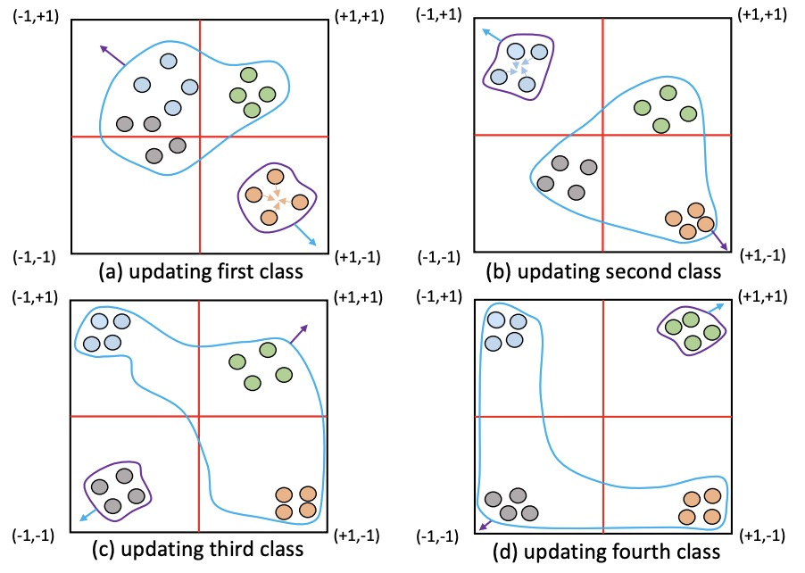 | Mingbao Lin, Rongrong Ji✉, Xiaoshuai Sun, Baochang Zhang, Feiyue Huang, Yonghong Tian, Dacheng Tao
Fast Class-wise Updating for Online Hashing IEEE Transactions on Pattern Analysis and Machine Intelligence (TPAMI), 2020 [pdf] [arXiv] [code] |
| 002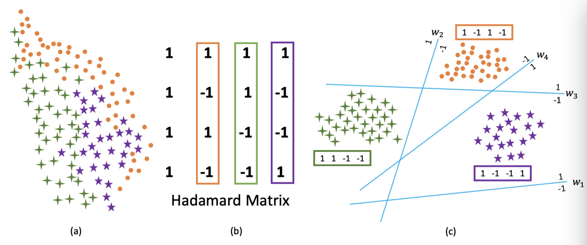 | Mingbao Lin, Rongrong Ji✉, Hong Liu, Xiaoshuai Sun, Shen Chen, Qi Tian
Hadamard Matrix Guided Online Hashing International Journal of Computer Vision (IJCV), 2020 [pdf] [arXiv] [code] |
001 |
Mingbao Lin, Rongrong Ji✉, Shen Chen, Xiaoshuai Sun, Chia-Wen Lin
Similarity-Preserving Linkage Hashing for Online Image Retrieval IEEE Transactions on Image Processing (TIP), 2020 [pdf] [code] |
Conference
| 008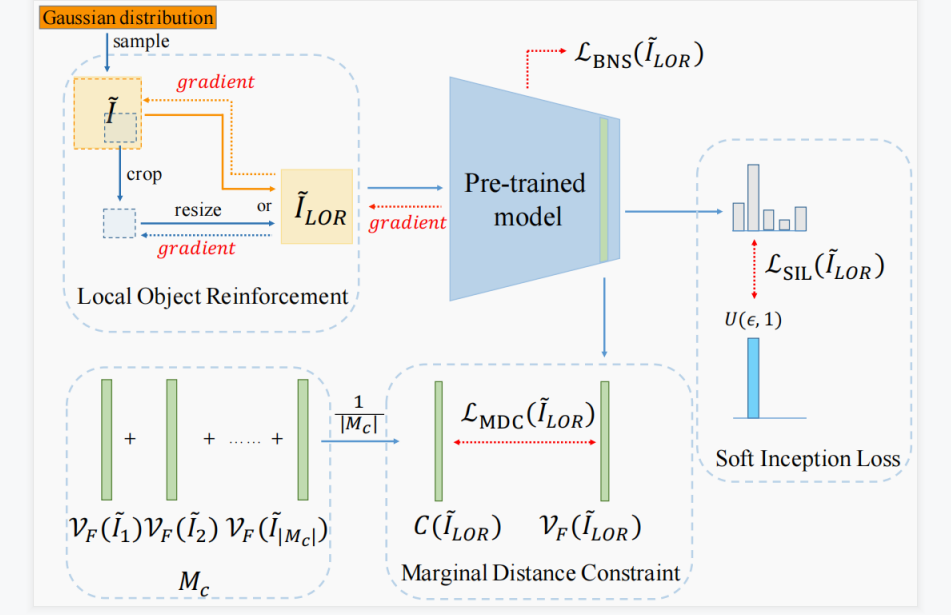 | Yunshan Zhong, Mingbao Lin, Gongrui Nan, Jianzhuang Liu, Baochang Zhang, Yonghong Tian, Rongrong Ji✉
IntraQ: Learning Synthetic Images with Intra-Class Heterogeneity for Zero-Shot Network Quantization IEEE/CVF Conference on Computer Vision and Pattern Recognition (CVPR), 2022 [pdf coming] [arXiv] [code] |
| 007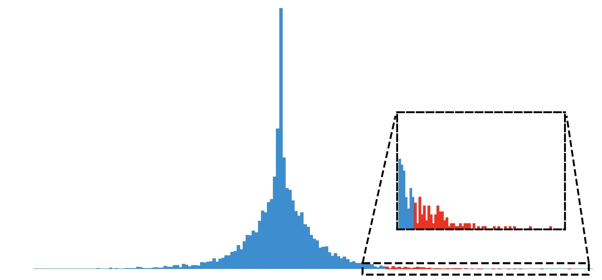 | Zihan Xu, Mingbao Lin, Jianzhuang Liu, Jie Chen, Ling Shao, Yue Gao, Yonghong Tian, Rongrong Ji✉
ReCU: Reviving the Dead Weights in Binary Neural Networks IEEE/CVF International Conference on Computer Vision (ICCV), 2021 [pdf|supp] [arXiv] [code] |
006 |
Mingbao Lin, Rongrong Ji✉, Zihan Xu, Baochang Zhang, Yan Wang, Yongjian Wu, Feiyue Huang, Chia-Wen Lin
Rotated Binary Neural Network The 34th Conference on Neural Information Processing Systems (NeurIPS), 2020 [pdf] [arXiv] [code] |
| 005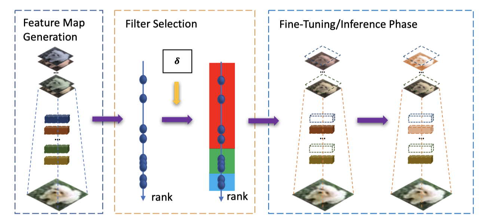 | Mingbao Lin, Rongrong Ji✉, Yan Wang, Yichen Zhang, Baochang Zhang, Yonghong Tian, Ling Shao
HRank: Filter Pruning using High-Rank Feature Map IEEE/CVF Conference on Computer Vision and Pattern Recognition (CVPR, Oral), 2020 [pdf] [arXiv] [code_v1] [code_v2] |
004 |
Mingbao Lin, Rongrong Ji✉, Yuxin Zhang, Baochang Zhang, Yongjian Wu, Yonghong Tian
Channel Pruning via Automatic Structure Search The 29th International Joint Conference on Artificial Intelligence (IJCAI), 2020 [pdf] [arXiv] [code] |
| 003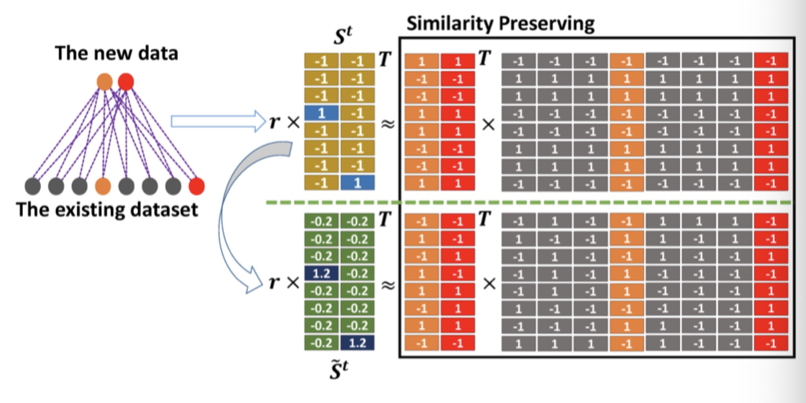 | Mingbao Lin, Rongrong Ji✉, Hong Liu, Xiaoshuai Sun, Yongjian Wu, Yunsheng Wu
Towards Optimal Discrete Online Hashing with Balanced Similarity The 33rd AAAI Conference on Artificial Intelligence (AAAI), 2019 [pdf] [arXiv] [code] |
| 002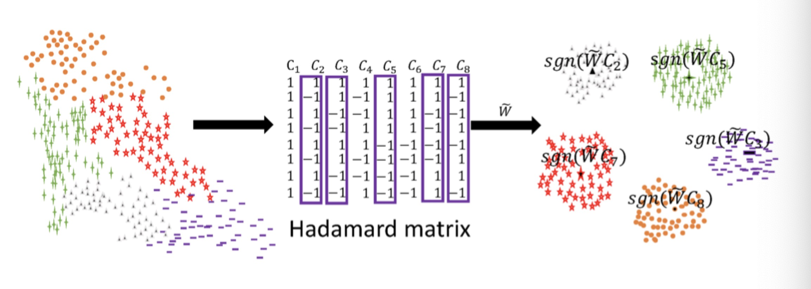 | Mingbao Lin, Rongrong Ji✉, Hong Liu, Yongjian Wu
Supervised Online Hashing via Hadamard Codebook Learning The 26th ACM International Conference on Multimedia (ACM MM), 2018 [pdf] [arXiv] [code] |
| 001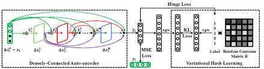 | Mingbao Lin*, Hong Liu*, Shengchuan Zhang, Yongjian Wu, Feiyue Huang, Rongrong Ji✉
Dense Auto-Encoder Hashing for Robust Cross-Modality Retrieval The 26th ACM International Conference on Multimedia (ACM MM), 2018 [pdf] [code] |
Preprint
014 |
Mingbao Lin, Mengzhao Chen, Yuxin Zhang, Ke Li, Yunhang Shen, Chunhua Shen, Rongrong Ji✉
Super Vision Transformer arXiv preprint arXiv:2205.11397 [arXiv] [code] |
| 013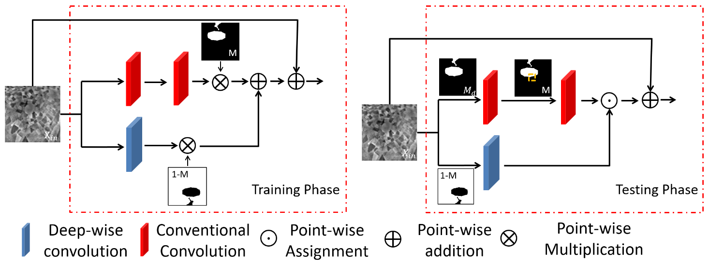 | Yimin Xu, Mingbao Lin, Hong Yang, Ke Li, Yunhang Shen, Fei Chao, Rongrong Ji✉
Shadow-Aware Dynamic Convolution for Shadow Removal arXiv preprint arXiv:2205.04908, 2022 [arXiv] [code] |
| 012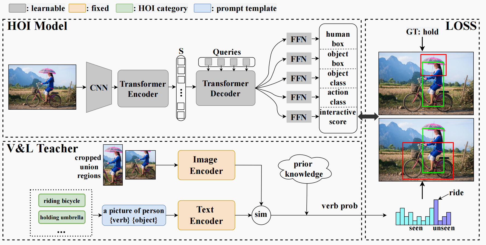 | Mingrui Wu, Jiaxin Gu, Yunhang Shen, Mingbao Lin, Chao Chen, Xiaoshuai Sun✉, Rongrong Ji
End-to-End Zero-Shot HOI Detection via Vision and Language Knowledge Distillation arXiv preprint arXiv:2204.03541, 2022 [arXiv] [code] |
| 011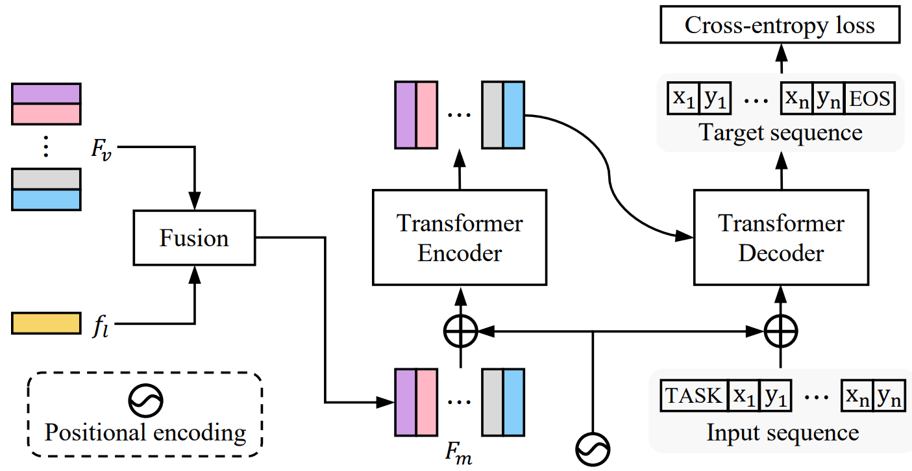 | Chaoyang Zhu, Yiyi Zhou, Yunhang Shen, Gen Luo, Xingjia Pan, Mingbao Lin, Chao Chen, Liujuan Cao✉, Xiaoshuai Sun, Rongrong Ji
SeqTR: A Simple yet Universal Network for Visual Grounding arXiv preprint arXiv:2203.16265, 2022 [arXiv] [code] |
| 010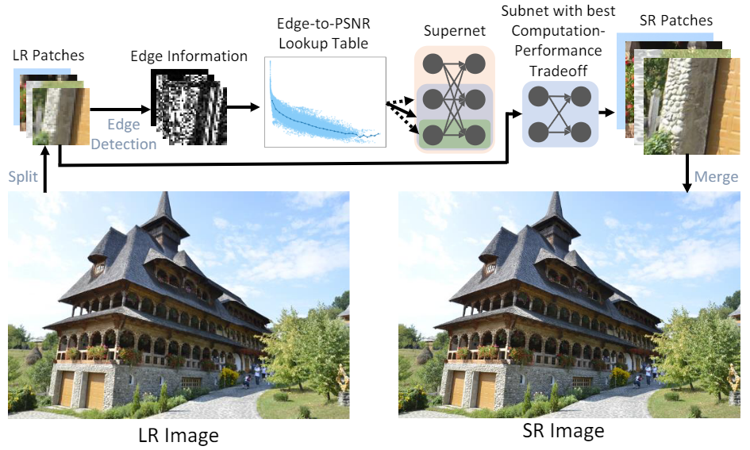 | Bohong Chen, Mingbao Lin, Kekai Sheng, Mengdan Zhang, Peixian Chen, Ke Li, Liujuan Cao✉, Rongrong Ji
ARM: Any-Time Super-Resolution Method arXiv preprint arXiv:2203.10812, 2022 [arXiv] [code] |
| 009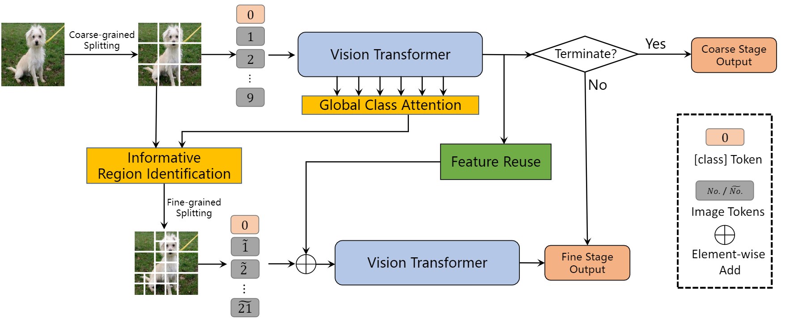 | Mengzhao Chen, Mingbao Lin, Ke Li, Yunhang Shen, Yongjian Wu, Fei Chao, Rongrong Ji✉
Coarse-to-Fine Vision Transformer arXiv preprint arXiv:2203.03821, 2022 [arXiv] [code] |
| 008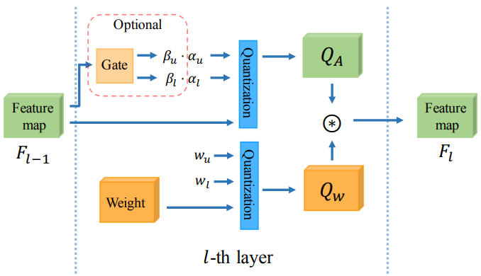 | Yunshan Zhong, Mingbao Lin, Xunchao Li, Ke Li, Yunhang Shen, Fei Chao, Yongjian Wu, Rongrong Ji✉
Dynamic Dual Trainable Bounds for Ultra-low Precision Super-Resolution arXiv preprint arXiv:2203.03844, 2022 [arXiv] [code] |
007 |
Yuxin Zhang, Mingbao Lin, Mengzhao Chen, Zihan Xu, Fei Chao, Yunhang Shen, Ke Li, Yongjian Wu, Rongrong Ji✉
Optimizing Gradient-driven Criteria in Network Sparsity: Gradient is All You Need arXiv preprint arXiv:2201.12826, 2022 [arXiv] [code] |
| 006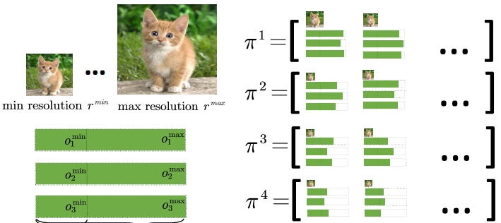 | Bohong Chen, Mingbao Lin, Liujuan Cao✉, Jianzhuang Liu, Qixiang Ye, Baochang Zhang, Wei Zeng, Yonghong Tian, Rongrong Ji
Prioritized Subnet Sampling for Resource-Adaptive Supernet Training arXiv preprint arXiv:2109.05432, 2021 [arXiv] [code] |
005 |
Yunshan Zhong, Mingbao Lin, Mengzhao Chen, Ke Li, Yunhang Shen, Fei Chao, Yongjian Wu, Feiyue Huang, Rongrong Ji✉
Fine-grained Data Distribution Alignment for Post-Training Quantization arXiv preprint arXiv:2109.04186, 2021 [arXiv] [code] |
004 |
Mingbao Lin, Yuxin Zhang, Yuchao Li, Bohong Chen, Fei Chao, Mengdi Wang, Shen Li, Yonghong Tian, Rongrong Ji✉
1xN Pattern for Pruning Convolutional Neural Networks arXiv preprint arXiv:2105.14713, 2021 [arXiv] [code] |
| 003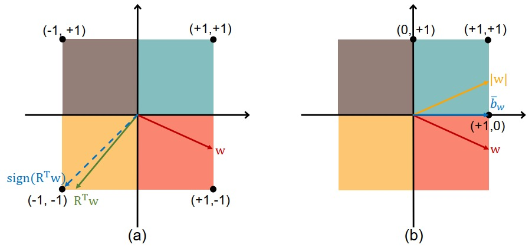 | Mingbao Lin, Rongrong Ji✉, Zihan Xu, Baochang Zhang, Fei Chao, Mingliang Xu, Chia-Wen Lin, Ling Shao
SiMaN: Sign-to-Magnitude Network Binarization arXiv preprint arXiv:2102.07981, 2021 [arXiv] [code] |
| 002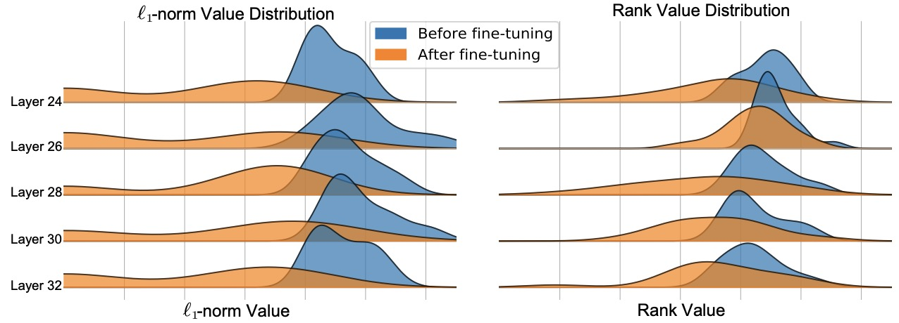 | Mingbao Lin, Rongrong Ji✉, Bohong Chen, Fei Chao, Jianzhuang Liu, Wei Zeng, Yonghong Tian, Qi Tian
Training Compact CNNs for Image Classification using Dynamic-coded Filter Fusion arXiv preprint arXiv:2107.06916, 2021 [arXiv] [code] |
| 001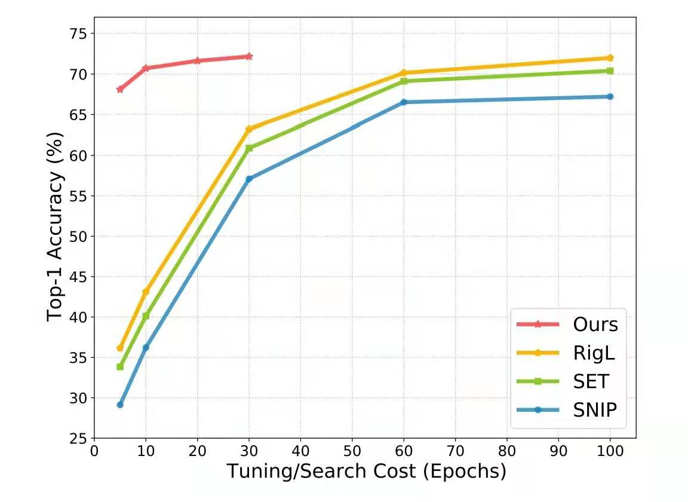 | Yuxin Zhang, Mingbao Lin, Fei Chao, Yan Wang, Ke Li, Yunhang Shen, Yongjian Wu, Rongrong Ji✉
Lottery Jackpots Exist in Pre-trained Models arXiv preprint arXiv:2104.08700, 2021 [arXiv] [code] |
Professional Activities [back top]
- Conference Reviewer: CVPR 2021--2022, ICCV 2021, ECCV 2022, ICML 2021--2022, NeurIPS 2022, AAAI 2021--2022, ACM MM 2021, IJCNN 2022
- Journal Reviewer: IEEE TPAMI, JMLR, IEEE TIP, IEEE TNNLS, IEEE TMM, IEEE TCSVT, IEEE TNSE, NEUCOM, NEUNET, NCAA
Major Awards [back top]
- National Scholarship (Ph.D.), China, 2021
- National Scholarship (Ph.D.), China, 2020
- Xiamen University Scholarship, 2019